I started doing CAD in 2022, when I joined my school's FIRST Robotics Competition team, the SciBorgs (Team 1155), as a construction member. This page collects my work in Onshape since then: from my first drivetrain exercise to FeatureScripts, a full robot assembly, a cadathon elevator and our 2025 Reefscape robot.
In progress
FRC 2025 Reefscape robot design
This is the draft KrayonCAD design I contributed to for my school's FRC robotics team in 2025. After the game for that year's competition was released, my team held a two-day kickoff to discuss game strategy and robot designs. After a long discussion, we made this very preliminary first design in KrayonCAD on Onshape. The design we hoped to build had four major components:
- A three-stage cascade elevator.
- A reorienting mechanism that turns the cylinder (coral) to the vertical axis.
- An intake made specifically for the cylinder (coral).
- An intake for the ball (algae), built around a roller.
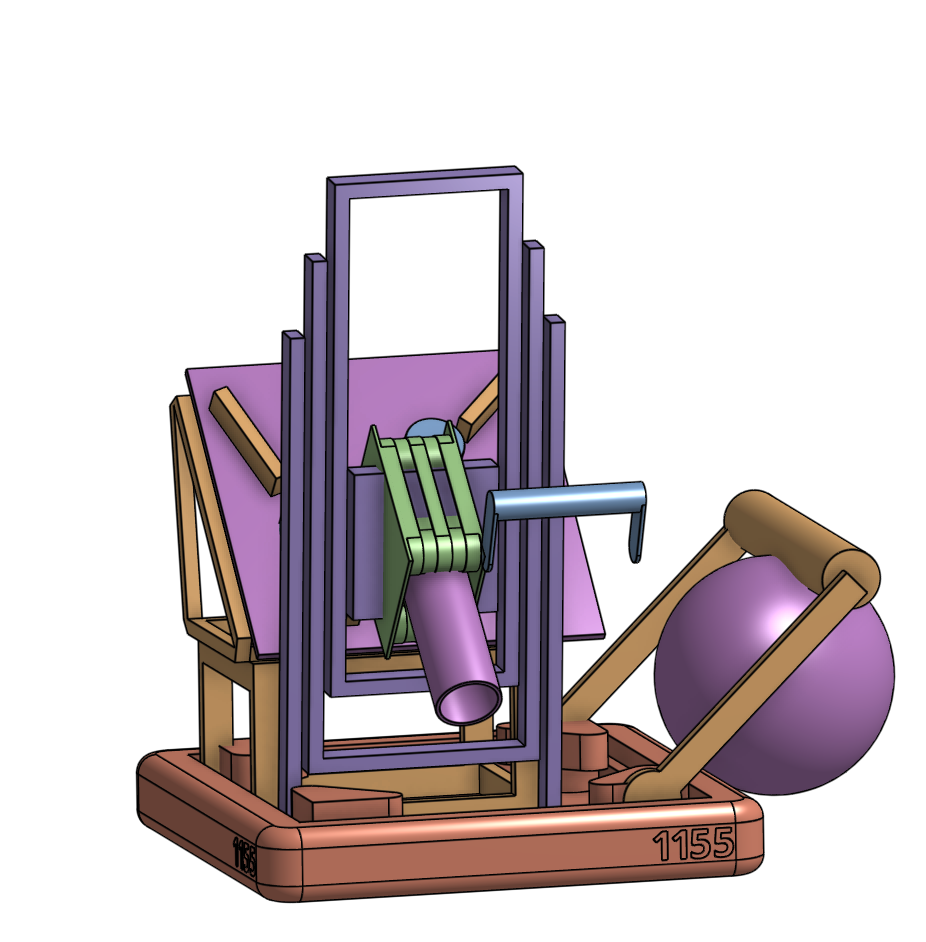
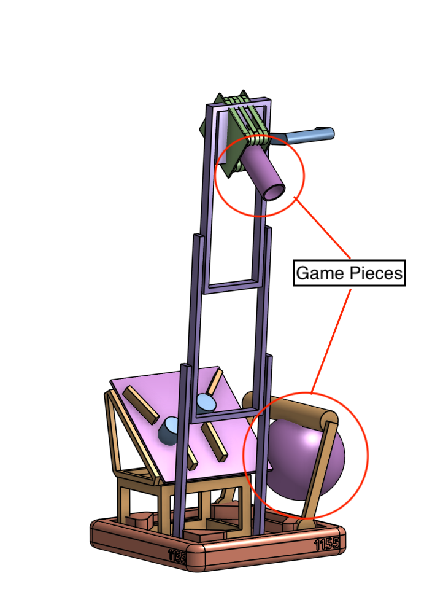
FRC gearbox design
For this project I decided to try designing a gearbox from scratch, without a previously made sketch or tutorials. It tested my knowledge of gears and of how to make a system where all the gears mesh properly in the end product. I hope to finish it in the near future.
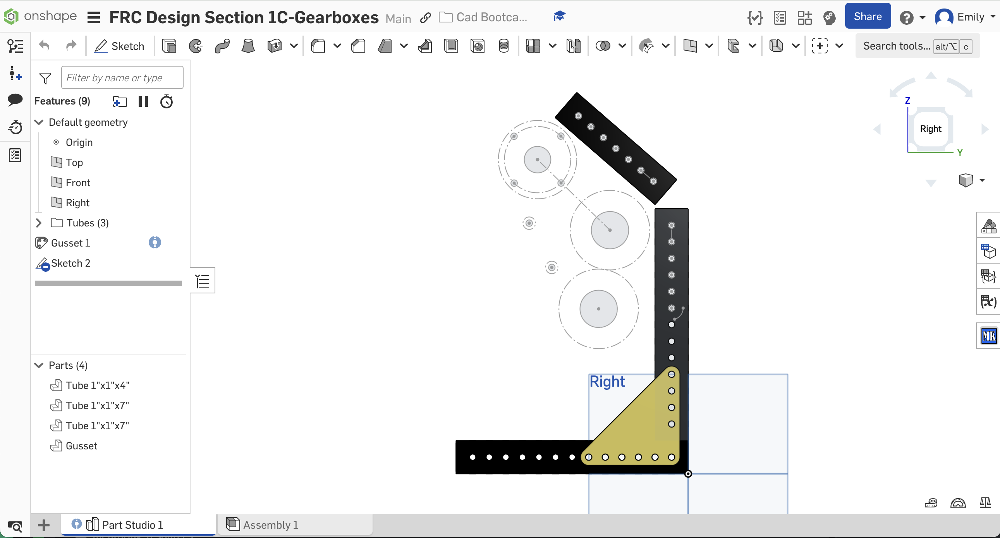
Completed
FRC drivetrain
One of the first exercises I did after joining the robotics team, to build my CAD skills. It let me experiment with linear patterns, learn how to use sketches to drive a design, and try beginner mates such as fastened and revolute mates. It took me from extruding simple square sketches to applying what I knew to real FRC mechanisms.
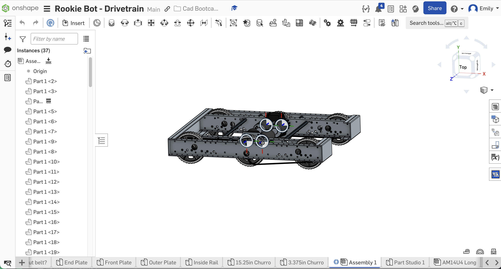
Assembly and simulation
Another CAD exercise, where I learned more about assemblies. I put together different parts and simulated their movement correctly by adding mates in specific locations. Even though it is introductory, I hold this project close because it taught me how to use mates in Onshape and built the habit of working through CAD practice.
Optimization: defining and FeatureScripts
These projects taught me to use Onshape's features to cut my CAD time almost in half. With a box tubing FeatureScript that structures box tubing automatically, and another that creates gussets from the holes I select, I can finish projects much faster and explore more of them in depth. The climber hook project in particular taught me different ways to fully define sketches in part studios, a step toward parametric CAD.
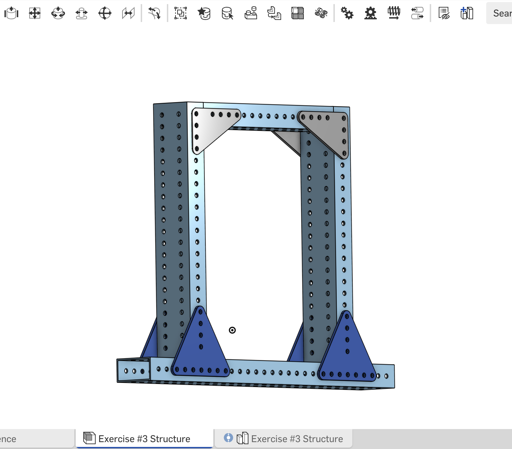
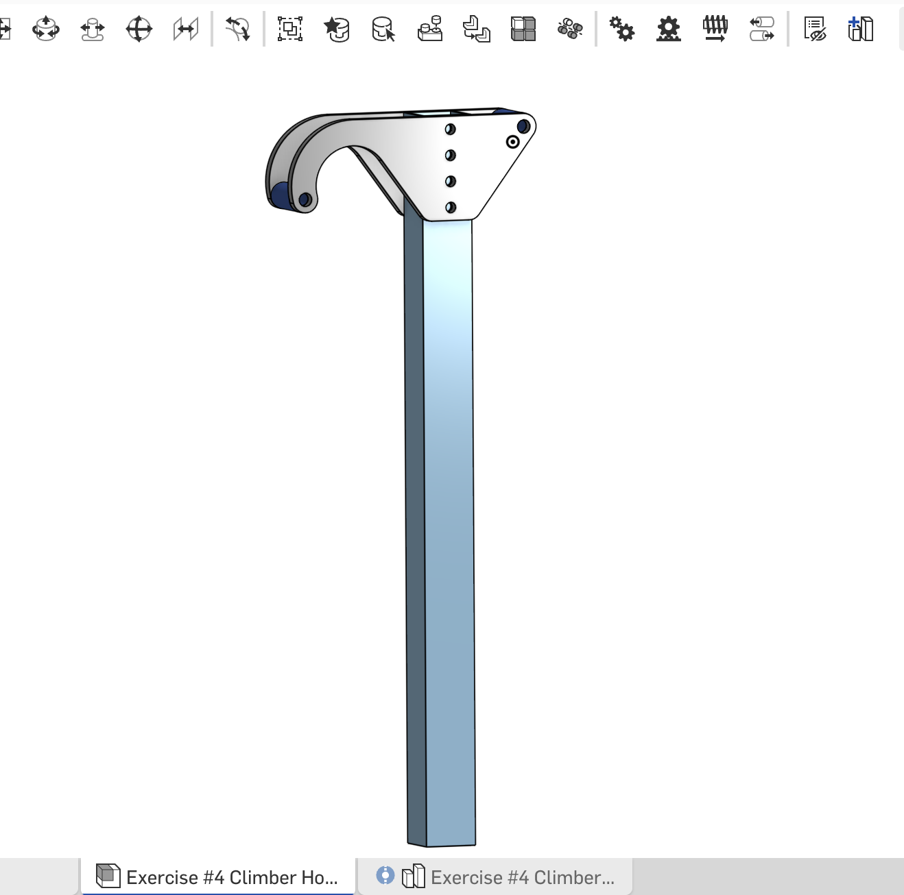
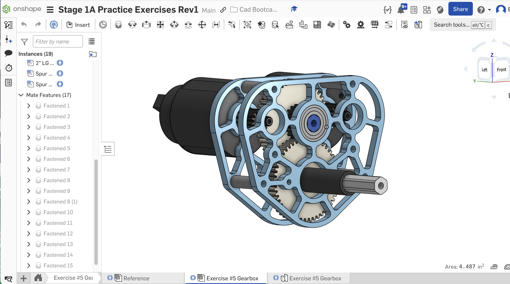
Full robot assembly
This assembly taught me why master sketches matter. A master sketch lets you plan a project visually, then use Onshape's derive feature to build from it quickly. When something needs to change, you change the master sketch and the change carries through every part studio in the assembly. It also taught me how important it is to import parts in Onshape.
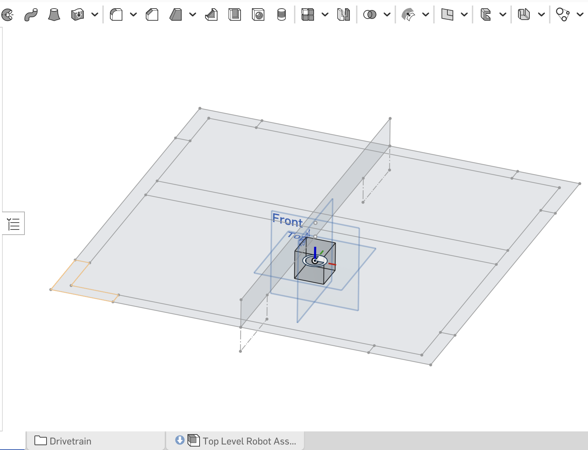
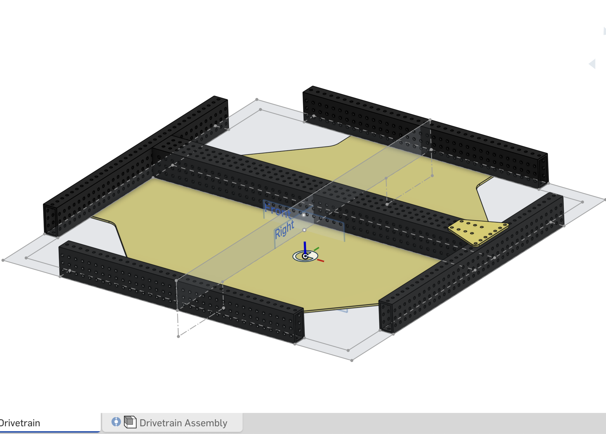
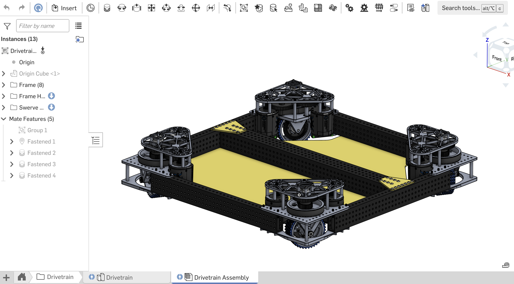
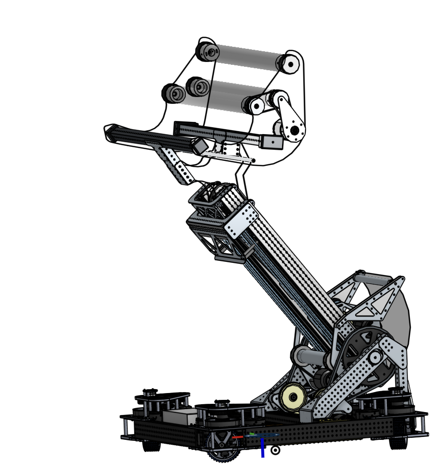
Cascade elevator (cadathon)
I took part in a cadathon with a group: we were given a mock FRC game and about 11 days to design and model a full robot. Once we agreed on a design, I was tasked with one of the major components, the cascade elevator. I had never modeled or rigged an elevator before.
I started by researching the most effective way to build the base structure, and after a few hours I had a fully parametric base sketch. It let me extrude all the major parts in one go and change any dimension easily. Then came rigging. Our design needed an open carriage to leave room for an arm, which made rigging harder. I studied models of already-rigged elevators to understand which connections the stages need.
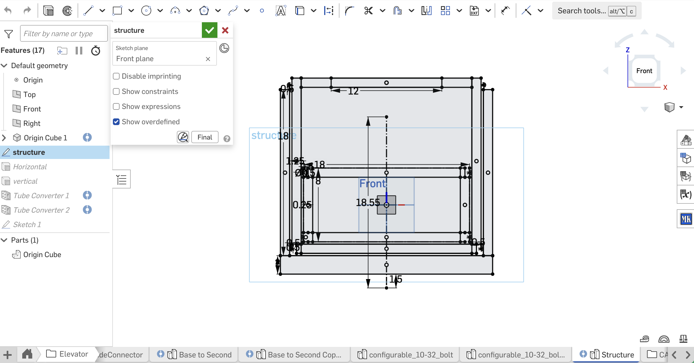
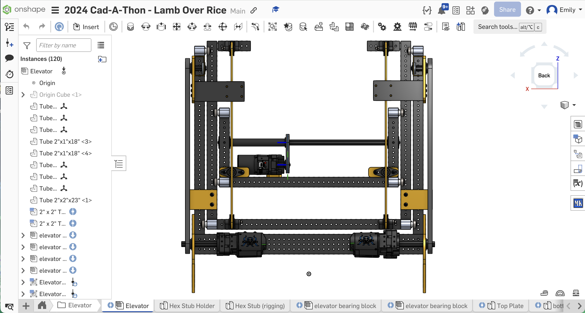
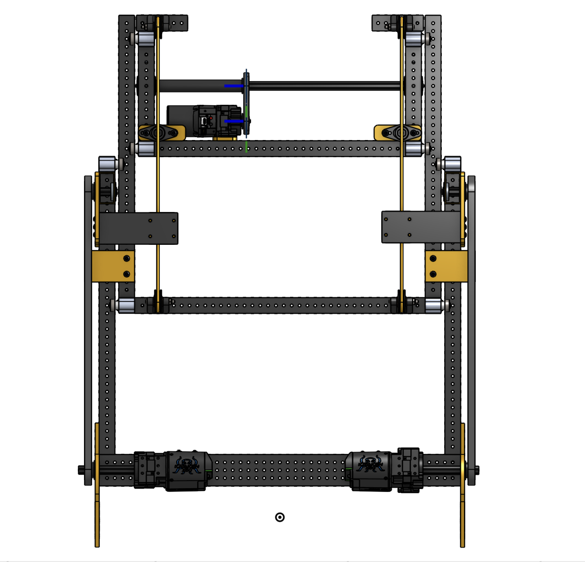